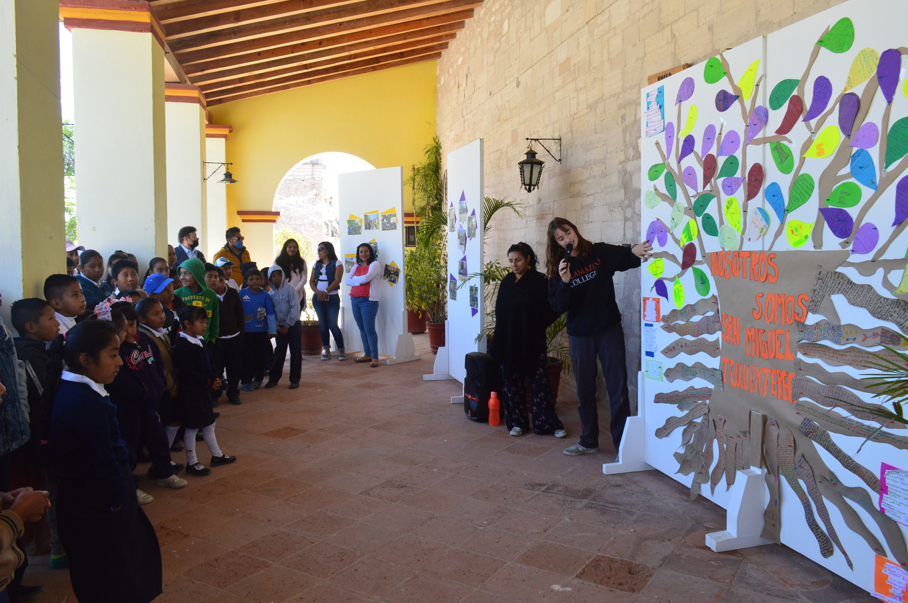

Each student carries out a service project, providing an expressive arts workshop to children and youth in collaboration with community museums and local schools. Finally, students participate in the on-going project “Our Vision of Change”, carrying out workshops for children and youth to explore aspects of their own culture. They provide tools for them to express what they have learned in diverse, creative ways. Young people write poetry, and create community maps, art journals, murals and plays. Throughout the process of these workshops, young people develop confidence, communication skills and creativity, becoming a bridge to transport their culture into the future.
The intensive experience of community engagement will build skills, enrich students’ capacity to relate to indigenous youth and community representatives, and provide an exceptional opportunity to become part of a meaningful struggle for local self-determination. Recent students have underlined that it allowed them to comprehend and contribute to significant community principles in action, and Spanish heritage students appreciated that it was an opportunity to reconnect with their cultural origins.